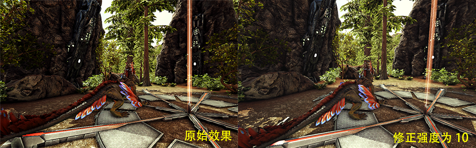
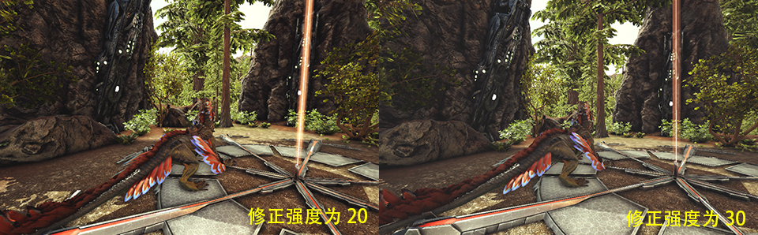
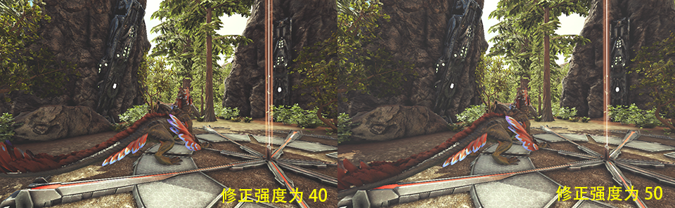
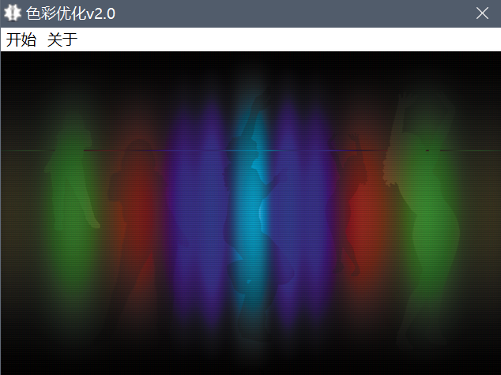
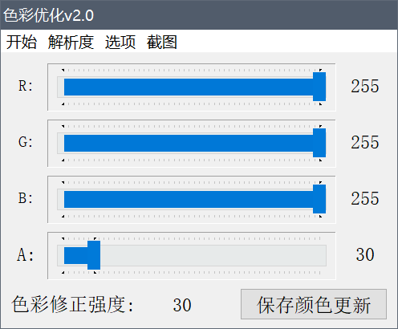
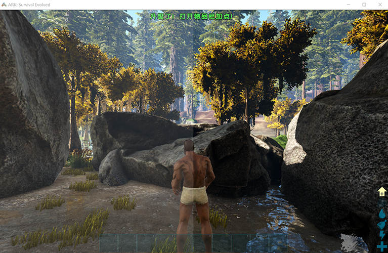

新动态：电玩街机[全新机台，对比旧版资源使用率更低，声音模拟更完善]已上线[浏览器跨平台游玩，支持电脑端、手机端、平板、电视盒子等平台设备...]支持自定义按键，支持手柄、键盘等外设输入！
站点公告：本站为非盈利性质个人站点，必然偶尔会发生无法访问的情况，介时还请多多理解，尽量第一时间恢复访问！
作者：感谢所有支持过本站的朋友们！愿天黑有灯，下雨有伞，平安幸福度一生！
无事阁原创软件_作者：不找事儿
★ 本站网址 ★ www.buzhaoshi.top ★ 或 ★ buzhaoshi.top ★
色彩优化v2.0_屏幕颜色优化
程序简介: 此程序为“街机扫描线”的衍生软件，专门用作优化屏幕的色彩，功能简单 单一的只做这一件工作
附件下载色彩优化v2.0: colortool2.0.rar
用 "方舟生存进化" 这款游戏来测试一下使用效果：
"方舟生存进化" 这款游戏称得上是一场视觉盛宴，欣赏唯美的风景，观赏已随时间的消逝而消失的各种远古恐龙。
由于风景太绚丽，游玩时间久些，眼睛会有些不舒服，特别场景切换强光转变的时候，虽然游戏中可以关闭环境光吸收等一些光照特效，但这样做的后果是游戏的风景线降下一个档次，风景逊色不少，今天发这篇文章的目的就是找到可以不必关掉任何特效，并且让游戏画面不再如此辣眼的方法！
先来看一下图片：



从上面六幅图中相信可以选出一种适合自己的色彩来进行游戏了。可以看出原始效果虽然对比度分明，但看久了对眼睛是有一定刺激性的，毕竟是显示屏显出，并非真实世界。2 3 4 5 6图所说的修正强度即颜色值 0-255，也就是说有255个修正值可以自选，根据自己的喜好设定修正值即可，下面主角出场，分几部分来说明如何设置。
首先下载色彩优化软件："色彩优化v2.0" 请到文章顶部下载
来看一下软件截图：


此软件支持少部分程序的全屏优化(测试可支持全屏的有 "游聚街机平台" "Mame街机模拟器" "Arcade街机模拟器"，其他程序需自行测试)，也就是说 "色彩优化v2.0" 是用以优化窗口化程序的色彩的。
下载后，解压到任意目录，运行需要优化的游戏或程序，然后打开软件单击菜单栏的开始按钮，选择智能吸附窗口，移动鼠标至方舟游戏的窗口(类似一些截图软件很方便)，如果吸附错了，就在被吸附的颜色区域按住鼠标拖动后松开和移动鼠标即可重新吸附，或者按ESC键或退格键重新来过，吸附无误的话按任意键直接进入控制台进行调节。
A:为透明度。R:为红色。G:为绿色。B:为蓝色。保存颜色按钮可以记录用户设置的颜色，以便下次开启软件后无需再次设置。
软件自带截图功能，直接选取保存格式，软件会自动保存已覆盖区域的图像到指定文件夹，截图以数字来命名，不建议清空统计次数，否则会替换已存在的同名文件。
再来看一下对比图：下图左边的颜色修正效果值为 A30 R255 G255 B255

最后建议方舟游戏使用此软件的配置为，背景颜色为白色-值为 R255 G255 B255，当然不一定非要纯白色，也可以试试暖色调。 透明度A为25-40之间为宜，当然最终效果还要根据情况慢慢调试，毕竟每台显示器显示出的效果是不同的，希望下载的伙伴喜欢这款软件吧！
★ 本站网址 ★ www.buzhaoshi.top ★ 或 ★ buzhaoshi.top ★